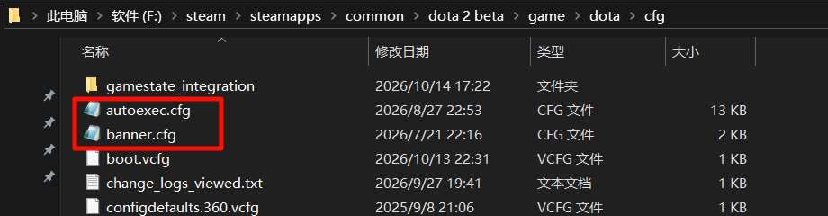
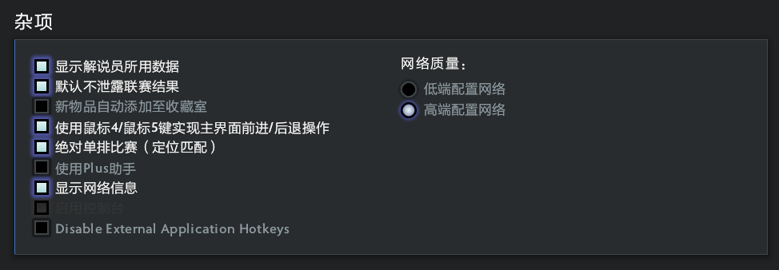
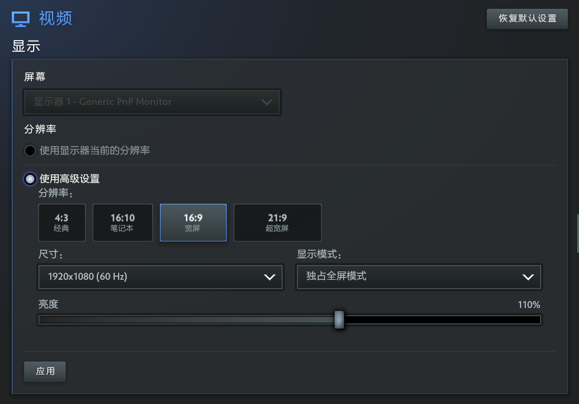
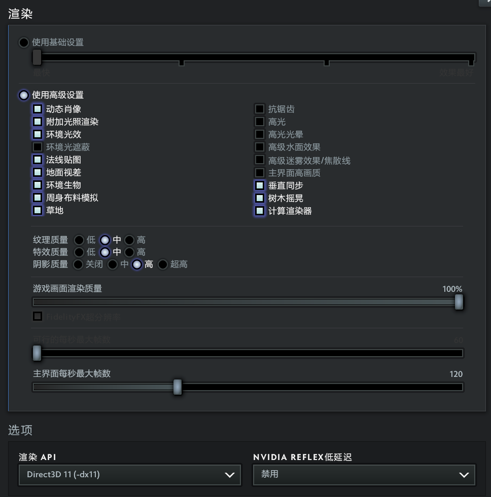

# 启动项优化使用概要 (避免限制)
随着启动项命令越来越多期望设置的越来越多时，当最大长度超 1024 个字符（含空格）时后面的命令就会不生效，所以需要在 Steam 中加入必要的命令然后必填一个 autoexec.cfg 文件。启动游戏会加载配置文件读取里面的所有启动项命令，而 auctoexec.cfg 注重于个人习惯配置
鼠标 PDI: 2100
国服启动项: -perfectworld (国际服不加就行)
PS：打游戏心态要沉着稳重，心乱堵思维误操作，流惯性简化
# Steam 右键游戏属性
# 国服启动
-perfectworld -console +fps_max 0 -high -map dota -novid -nojoy +exec autoexec.cfg
# 国际服启动
-console +fps_max 0 -high -map dota -novid -nojoy +exec autoexec.cfg
因为这些命令只能在这里生效其中 + exec autoexec.cfg 是加载更多优化命令
# autoexec.cfg
存放目录：steam 右键 dota2 管理 - 浏览本地文件 - game - dota - cfg
//============================================================================= | |
// DOTA 2 ULTIMATE AUTOEXEC | |
// Version 2026 | |
// Clean Edition | |
//============================================================================= | |
echo "" | |
echo "==========================================" | |
echo " DOTA2 ULTIMATE AUTOEXEC LOADED" | |
echo "==========================================" | |
echo "" | |
echo "############################################################" | |
echo "# #" | |
echo "# ██████╗ ██████╗ ████████╗ █████╗ ██████╗ #" | |
echo "# ██╔══██╗██╔═══██╗╚══██╔══╝██╔══██╗██╔════╝ #" | |
echo "# ██║ ██║██║ ██║ ██║ ███████║╚█████╗ #" | |
echo "# ██║ ██║██║ ██║ ██║ ██╔══██║ ╚═══██╗ #" | |
echo "# ██████╔╝╚██████╔╝ ██║ ██║ ██║██████╔╝ #" | |
echo "# ╚═════╝ ╚═════╝ ╚═╝ ╚═╝ ╚═╝╚═════╝ #" | |
echo "# #" | |
echo "############################################################" | |
//============================================================================= | |
// Console | |
//============================================================================= | |
con_enable "1" | |
//============================================================================= | |
// FPS | |
//============================================================================= | |
// Unlimited FPS | |
fps_max "0" | |
// UI FPS（新版 Source2） | |
fps_max_ui "120" | |
// 后台不休眠 | |
engine_no_focus_sleep "0" | |
//============================================================================= | |
// Network | |
//============================================================================= | |
rate "800000" | |
//============================================================================= | |
// Mouse | |
//============================================================================= | |
sensitivity "3" | |
m_pitch "0.022" | |
m_yaw "0.022" | |
zoom_sensitivity_ratio "1" | |
//============================================================================= | |
// Camera | |
//============================================================================= | |
// 鼠标平移 / Edge Pan | |
// 0 = 关闭 | |
// 1 = 开启 | |
dota_camera_edgemove "1" | |
// 视角反摇 | |
// 0 = 正常 | |
// 1 = 反转 | |
dota_camera_reverse "0" | |
// 重生时视角居中到英雄 | |
// 0 = 关闭 | |
// 1 = 开启 | |
dota_reset_camera_on_spawn "0" | |
// 禁用镜头缩放 | |
// 0 = 允许缩放 | |
// 1 = 禁止缩放 | |
dota_camera_disable_zoom "0" | |
// 按住“选中英雄”键来跟随 | |
// 0 = 关闭 | |
// 1 = 开启 | |
dota_camera_hold_select_to_follow "1" | |
// 左键点击激活镜头反摇 / Camera Grip | |
// 0 = 关闭 | |
// 1 = 开启 | |
dota_leftclick_cameragrip_new "0" | |
// 启用画面晃动 | |
// 0 = 关闭 | |
// 1 = 开启 | |
dota_screen_shake "1" | |
// 观战时视角平滑拖曳 | |
// 0 = 关闭 | |
// 1 = 开启 | |
dota_camera_dotatv_smooth_drag "0" | |
// 鼠标平移时启用观战或临时自由视角 | |
// 0 = 关闭 | |
// 1 = 开启 | |
dota_spectator_enable_edgepan_temporary_free_camera "1" | |
// 视角速度 | |
dota_camera_speed "2712" | |
// 视角减速 | |
// 5 = 最低 | |
// 50 = 最高 | |
dota_camera_accelerate "50" | |
// 自由视角覆盖时间 | |
// 单位：秒 | |
dota_camera_temporary_freecamera_time "2" | |
//============================================================================= | |
// Gameplay | |
//============================================================================= | |
// 自定义游戏期间禁用分单位快捷键 | |
dota_per_unit_keybindings_disabled_during_custom_games "0" | |
// 默认按下快捷键时触发快速施法 | |
dota_quickcast_onkeydown "1" | |
// 使用Dota传统键位 | |
// 0 = 关闭（现代 QWER） | |
// 1 = 开启（DotA 1 Legacy Keys） | |
dota_ability_legacy_mode_quick_cast "0" | |
dota_ability_quick_cast "1" | |
dota_enable_direct_quickcast_bindings "1" | |
dota_item_double_tap_self_cast "1" | |
dota_smart_doubletap "1" | |
dota_alt_right_range_hint "1" | |
//============================================================================= | |
// Player | |
//============================================================================= | |
dota_force_right_click_attack "2" // 右键友军 = 反补 | |
dota_player_units_auto_attack_mode "1" // 自动攻击 = 标准 | |
dota_summoned_units_auto_attack_mode_2 "2" // 召唤单位 = 始终攻击 | |
dota_player_multipler_orders "1" // CTRL统一指令 | |
dota_player_smart_multiunit_cast "1" // 智能多单位施法 | |
dota_selection_groups "0" // 智能选择编组 = 关闭 | |
dota_settings_targeted_attack_move "1" // 智能攻击移动 | |
dota_settings_targeted_attack_move_radius "200" | |
dota_settings_quick_target_attack "0" // 快速攻击 = 关闭 | |
dota_settings_quick_move "1" // 快速移动 = 开启 | |
cl_dota_alt_unit_movetodirection "0" // ALT 径直移动 | |
dota_ability_self_cast_timeout "0.60" // 双击判定时间 | |
dota_player_add_summoned_to_selection "0" // 自动选择召唤单位 | |
dota_player_teleport_requires_halt "1" | |
dota_player_channels_require_stop "1" | |
dota_player_interaction_channels_require_stop "1" | |
dota_continue_click_movement_after_cast_cancel "1" | |
dota_disable_autoattack_during_stop "1" | |
dota_player_auto_repeat_right_mouse "1" | |
dota_toggle_autoattack_automatically_during_orders "0" | |
//============================================================================= | |
// HUD | |
//============================================================================= | |
dota_hud_netgraph "1" | |
dota_hud_queued_orders_enable "1" | |
dota_hud_healthbar_local_player_high_visibility "1" | |
dota_show_accept_match_details "1" | |
//============================================================================= | |
// Minimap | |
//============================================================================= | |
// 普通状态：英雄带箭头 | |
// 0 = 英雄带箭头 | |
// 1 = 仅英雄 | |
// 2 = 箭头（玩家颜色） | |
// 3 = 箭头（团队颜色） | |
// 4 = 英雄名 | |
dota_minimap_primary_option "0" | |
// ALT 状态：英雄名 | |
dota_minimap_secondary_option "4" | |
// 0 = 无 | |
// 1 = 简易 | |
// 2 = 写实 | |
dota_minimap_background_option "2" | |
// 0 = 靠左 | |
// 1 = 靠右 | |
dota_minimap_position_option "1" | |
// 0 = 普通 | |
// 1 = 特大 | |
dota_hud_extra_large_minimap "0" | |
// 动态调整英雄图标 | |
// 0 = 关闭 | |
// 1 = 开启 | |
dota_minimap_hero_scalar "0" | |
// 英雄图标大小 | |
// 600 ≈ 100% | |
// 900 ≈ 150% | |
// 1200 ≈ 200% | |
dota_minimap_hero_size "1200" | |
// 小地图误点判定时间 | |
// 单位：秒 | |
dota_minimap_misclick_time "0.20" | |
dota_minimap_always_draw_hero_icons "1" | |
dota_minimap_simple_background "1" | |
dota_minimap_hide_background "0" | |
//============================================================================= | |
// Overlay Map | |
//============================================================================= | |
// 按住快捷键时显示，松开隐藏 | |
// 0 = 按住时可见 | |
// 1 = 切换可见性 | |
dota_overlaymap_togglemode "0" | |
// Overlay Map 不接受鼠标输入 | |
// 0 = 从不 | |
// 1 = 始终 | |
// 2 = 按住快捷键时 | |
dota_overlaymap_inputmode "0" | |
// 叠加地图透明度 | |
// 0.0 = 0% | |
// 0.5 = 50% | |
// 1.0 = 100% | |
dota_overlaymap_opacity "0.5" | |
// Overlay Map 居中 | |
// 0 = 居中 | |
// 1 = 靠左 | |
// 2 = 靠右 | |
dota_overlaymap_position "0" | |
//============================================================================= | |
// Shop | |
//============================================================================= | |
// 总是使用快捷键购买装备 | |
// 0 = 关闭 | |
// 1 = 开启 | |
dota_shop_force_hotkeys "0" | |
// 商店打开时自动聚焦搜索框 | |
// 0 = 关闭 | |
// 1 = 开启 | |
dota_shop_search_autofocus "0" | |
// 启用简易版商店 | |
// 0 = 关闭 | |
// 1 = 开启 | |
dota_enable_new_player_shop "0" | |
//============================================================================= | |
// Quick Buy / Purchase Marking | |
//============================================================================= | |
// 加入快速购买的物品自动标记为预购 | |
// 0 = 关闭 | |
// 1 = 开启 | |
dota_auto_mark_for_buy "1" | |
// 右键点击秘密商店物品时加入快速购买并标记预购 | |
// 0 = 关闭 | |
// 1 = 开启 | |
dota_shop_mark_for_buy_secret_shop_item "1" | |
// 右键点击无法购买的快速购买物品时标记预购 | |
// 0 = 关闭 | |
// 1 = 开启 | |
dota_quickbuy_rightclick_marksforbuy "1" | |
//============================================================================= | |
// Courier Auto Deliver | |
//============================================================================= | |
// 普通模式默认开启自动运送 | |
// 0 = 关闭 | |
// 1 = 开启 | |
dota_courier_autodeliver "1" | |
// Turbo 默认开启自动运送 | |
// 0 = 关闭 | |
// 1 = 开启 | |
dota_turbo_courier_default_auto_deliver "1" | |
// 自动运送时，如果速度爆发可用则自动使用 | |
// 0 = 关闭 | |
// 1 = 开启 | |
dota_auto_courier_auto_burst "1" | |
// 英雄隐身时不自动运送 | |
// 0 = 允许隐身时运送 | |
// 1 = 仅英雄可见时运送 | |
dota_auto_courier_deliver_visible_only "0" | |
//============================================================================= | |
// Interface | |
//============================================================================= | |
// 施法时显示技能距离 | |
// 0 = 关闭 | |
// 1 = 开启 | |
dota_enable_range_finder "1" | |
// 死亡后视角颜色改变 | |
// 0 = 关闭 | |
// 1 = 开启 | |
dota_camera_deatheffect "1" | |
// 隐藏伤害数值 | |
// 0 = 显示 | |
// 1 = 隐藏 | |
dota_hud_disable_damage_numbers "0" | |
// 单位查询覆盖英雄控制面板 | |
// 0 = 开启 | |
// 1 = 关闭 | |
dota_hud_new_query_panel "0" | |
// 在游戏界面上显示排队中的指令 | |
// 0 = 关闭 | |
// 1 = 开启 | |
dota_hud_queued_orders_enable "1" | |
// 色盲模式 | |
// 0 = 关闭 | |
// 1 = 开启 | |
// 2 = 区分队友 | |
dota_hud_colorblind "0" | |
//============================================================================= | |
// Cursor | |
//============================================================================= | |
// 自动选择指针大小 | |
// 0 = 关闭 | |
// 1 = 开启 | |
cl_auto_cursor_scale "0" | |
// 指针大小 | |
// 1.0 = 100% | |
cl_cursor_scale "1" | |
//============================================================================= | |
// ALT Information | |
//============================================================================= | |
// ALT 显示英雄位置 | |
// 0 = 关闭 | |
// 1 = 开启 | |
dota_show_hero_finder "1" | |
// ALT 显示野怪刷新范围 | |
// 0 = 关闭 | |
// 1 = 开启 | |
dota_alt_shows_neutral_spawn_boxes "1" | |
// ALT 显示防御塔攻击范围 | |
// 0 = 关闭 | |
// 1 = 开启 | |
dota_alt_shows_tower_attack_range "1" | |
//============================================================================= | |
// Health Bars | |
//============================================================================= | |
// 启用高可见度本地英雄血条 | |
// 0 = 关闭 | |
// 1 = 开启 | |
dota_hud_healthbar_local_player_high_visibility "1" | |
// 区分队友血条 | |
// 0 = 普通 | |
// 1 = 色盲模式 | |
// 2 = 区分队友血条 | |
dota_hud_colorblind "0" | |
// 血条上显示名称 | |
// 0 = 英雄名称 | |
// 1 = 玩家名称 | |
// 2 = 无 | |
dota_hero_overhead_names "2" | |
// 禁用状态文字 | |
// 0 = 显示 | |
// 1 = 隐藏 | |
dota_hud_healthbar_disable_status_display "0" | |
//============================================================================= | |
// Audio | |
//============================================================================= | |
volume "1" | |
snd_disable_mixer_duck "1" | |
//============================================================================= | |
// Misc | |
//============================================================================= | |
joystick "0" | |
//============================================================================= | |
// Useful Aliases | |
//============================================================================= | |
alias dc "disconnect" | |
alias rc "retry" | |
alias cls "clear" | |
alias rs "restart" | |
alias banner " | |
echo ======================================== | |
echo DOTA 2 Ultimate Autoexec | |
echo Version 2026 | |
echo Loaded Successfully | |
echo ======================================== | |
" | |
echo "Version 2026.07" | |
echo "Ultimate Autoexec Loaded" | |
echo ">>> DOTA 2 AUTOEXEC v2026.07 Loaded <<<" | |
alias banner "exec banner" |
# banner.cfg
echo ############################################################; | |
echo # #; | |
echo # ██████╗ ██████╗ ████████╗ █████╗ ██████╗ #; | |
echo # ██╔══██╗██╔═══██╗╚══██╔══╝██╔══██╗██╔════╝ #; | |
echo # ██║ ██║██║ ██║ ██║ ███████║╚█████╗ #; | |
echo # ██║ ██║██║ ██║ ██║ ██╔══██║ ╚═══██╗ #; | |
echo # ██████╔╝╚██████╔╝ ██║ ██║ ██║██████╔╝ #; | |
echo # ╚═════╝ ╚═════╝ ╚═╝ ╚═╝ ╚═╝╚═════╝ #; | |
echo # #; | |
echo ############################################################; | |
echo; | |
echo Welcome, Calvin Dou; | |
echo DOTA 2 Ultimate Autoexec 2026-07 Dota2 YYDS♥; | |
echo; | |
echo ############################################################ | |
" |

# 游戏内设置



# 单独设置技能可打断施法
打开路径文件：E:\steam\userdata\1217691581\570\remote\cfg\dotakeys_personal.lst
在文件中搜索英雄英文名称：以 puck 为例
在 AbilityPrimary3QuickCast 快速施法中添加 Channel 字段
Channel 参数：
"0" 打断持续施法设置跟随全局设置
"1" 允许任何操作打断持续施法
"2" 仅 H/S 可以打断持续施法
"AbilityPrimary2" 为传统施法
"AbilityPrimary3QuickCast" 为快速施法
"npc_dota_hero_puck" | |
{ | |
"AbilityUltimate" | |
{ | |
"Mode" "-1" | |
} | |
"TalentUpgradeStatLeft" | |
{ | |
"Key" "1" | |
"Mode" "0" | |
} | |
"TalentUpgradeStatRight" | |
{ | |
"Key" "2" | |
"Mode" "0" | |
} | |
"TalentUpgradeAttribute" | |
{ | |
"Key" "3" | |
"Mode" "0" | |
} | |
"AbilityPrimary1QuickCast" | |
{ | |
"Key" "Q" | |
"Mode" "1" | |
} | |
"AbilityPrimary2QuickCast" | |
{ | |
"Key" "W" | |
"Mode" "1" | |
} | |
"AbilityPrimary3QuickCast" | |
{ | |
"Key" "E" | |
"Mode" "1" | |
"Channel" "1" | |
} | |
"AbilitySecondary1QuickCast" | |
{ | |
"Key" "D" | |
"Mode" "1" | |
} | |
"AbilitySecondary2QuickCast" | |
{ | |
"Key" "F" | |
"Mode" "1" | |
} | |
"AbilityUltimateQuickCast" | |
{ | |
"Key" "R" | |
"Mode" "1" | |
} | |
"AbilityPrimary1AutoCastAlternate" | |
{ | |
"Mode" "0" | |
} | |
"AbilityPrimary2AutoCastAlternate" | |
{ | |
"Mode" "0" | |
} | |
"AbilityPrimary1AutoCastAlternate2" | |
{ | |
"Key" "q" | |
"Modifier" "ALT" | |
"Mode" "0" | |
"ChannelCancel" "ALT" | |
} | |
"AbilityPrimary2AutoCastAlternate2" | |
{ | |
"Key" "w" | |
"Modifier" "ALT" | |
"Mode" "0" | |
"ChannelCancel" "ALT" | |
} | |
"AbilityPrimary3AutoCastAlternate2" | |
{ | |
"Key" "e" | |
"Modifier" "ALT" | |
"Mode" "0" | |
"ChannelCancel" "ALT" | |
} | |
"AbilitySecondary1AutoCastAlternate2" | |
{ | |
"Key" "d" | |
"Modifier" "ALT" | |
"Mode" "0" | |
"ChannelCancel" "ALT" | |
} | |
"AbilitySecondary2AutoCastAlternate2" | |
{ | |
"Key" "f" | |
"Modifier" "ALT" | |
"Mode" "0" | |
"ChannelCancel" "ALT" | |
} | |
"AbilityUltimateAutoCastAlternate2" | |
{ | |
"Key" "r" | |
"Modifier" "ALT" | |
"Mode" "0" | |
"ChannelCancel" "ALT" | |
} | |
"AbilityPrimary1AutoCast" | |
{ | |
"Mode" "0" | |
} | |
"AbilityPrimary2AutoCast" | |
{ | |
"Mode" "0" | |
} | |
"AbilityPrimary3AutoCast" | |
{ | |
"Mode" "0" | |
} | |
"AbilitySecondary1AutoCast" | |
{ | |
"Mode" "0" | |
} | |
"AbilitySecondary2AutoCast" | |
{ | |
"Mode" "0" | |
} | |
"AbilityUltimateAutoCast" | |
{ | |
"Mode" "0" | |
} | |
} |
# 卡频道解决方案
关闭 Dota2，删除本地文件：\Steam\userdata <你的 steamid>\570\remote\cfg\chat.cfg，取消 Dota2 云同步，进入游戏看频道是否存在如果存在就退出频道，关闭 Dota2 开启云同步，开始游戏时选择同步选择本地。进入游戏
如何避免？
- 进入一两个频道可能不会卡频道但是多个频道如果没有退出频道就关闭 Dota2 此时云同步就可能会卡频道，或者突然掉线此时没退出的多个频道也可能会卡频道，所以避免手段就是在不是突然掉线情况下尽量退出多个频道，要么只留一两个，要么一个不留
---d-kcU6HQA40W-k-c8p04dw4VL-x.com